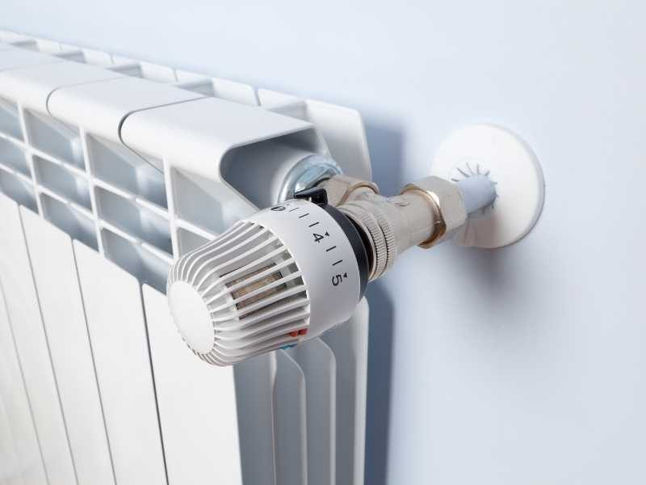
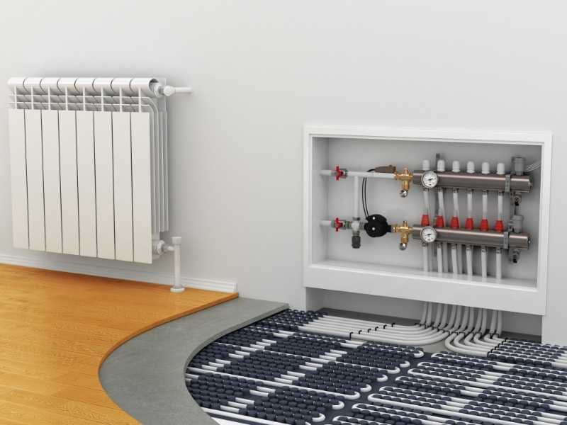

Chauffage & climatisation
Un confort optimal, ete comme hiver
Pompes a chaleur, chauffage et panneaux solaires. Des solutions performantes et economes en energie.
Pompes a chaleur, chauffage et panneaux solaires. Des solutions performantes et economes en energie.
Qu'il s'agisse d'une pompe a chaleur air/eau, qui utilise l'air exterieur pour chauffer votre interieur et l'eau chaude sanitaire, ou d'une pompe a chaleur air/air qui chauffe votre logement, la PAC reste une solution incomparable pour ameliorer votre confort en ete comme en hiver.
Fiez-vous a notre expertise pour la mise en place, l'entretien et le depannage de votre pompe a chaleur.


Le chauffage solaire capte et transforme l'energie solaire, gratuite et inepuisable, pour chauffer votre interieur et produire de l'eau chaude. Une solution ecologique et de reelles economies sur votre facture.
Electricien professionnel, SPEC TOBI assure aussi l'installation de panneaux solaires pour repondre a vos besoins en electricite, quelle que soit la marque de vos equipements.

Reponse rapide et devis gratuit, sur Nice et tout le bassin azureen.